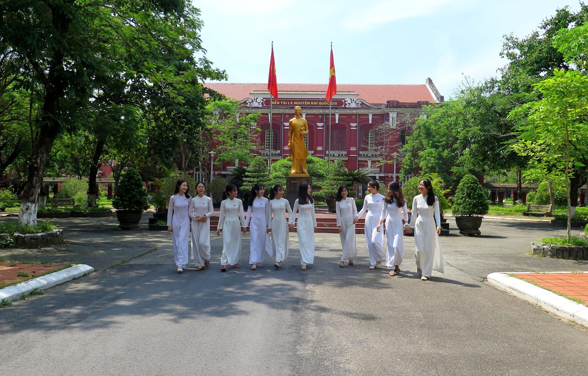

Ngày 26 tháng 01 năm 2024
I.TÊN TRƯỜNG, TẦM NHÌN, SỨ MỆNH
Vị trí xếp hạng giáo dục mũi nhọn nằm ở top 10 trong toàn quốc khẳng định thương hiệu của vùng đất học. Tuy nhiên, giai đoạn từ 2022 đến 2030, tầm nhìn đến năm 2045, Trường THPT chuyên Quốc Học sẽ có một vị thế cao hơn đúng với chiến lược về phát triển trường chuyên đào tạo nhân tài trong cả nước.
Trong giai đoạn 1990-2009, Trường THPT chuyên Quốc Học gặp khó khăn về giải học sinh giỏi và tuyển chọn học sinh tham gia các đội tuyển quốc tế. Tuy nhiên, từ năm 2010, Trường đã có bước phát triển đáng kể, đạt nhiều giải cao ở các kỳ thi quốc tế, đặc biệt là trong lĩnh vực khoa học. Cơ hội và thành tích ngày càng tăng, với nhiều học sinh đoạt giải ở các môn học như Sinh học, Vật lý, Tin học. Mặc dù đã có những thành tựu đáng chú ý, nhưng Hiệu trưởng của trường vẫn thấy lo lắng về nguồn nhân lực giáo viên. Trường gặp khó khăn trong việc bồi dưỡng và nâng cao trình độ cho đội ngũ giáo viên. Công tác đào tạo ở nước ngoài và chính sách hỗ trợ chưa đáp ứng đầy đủ, dẫn đến một số khuyết điểm trong hệ thống giáo dục. Nghị quyết số 54-NQ/TW đã đề ra mục tiêu làm cho Trường THPT chuyên Quốc Học trở thành điểm sáng về chất lượng giáo dục, có sức thu hút quốc tế. Để đạt được mục tiêu này, trường đề xuất các giải pháp như đầu tư vào bồi dưỡng giáo viên, hợp tác với các trường đại học, mời giáo viên xuất sắc, và mở rộng học sinh giỏi quốc tế. Đồng thời, cần quan trọng hóa giáo dục, tạo cơ chế hỗ trợ xã hội hóa giáo dục và đầu tư vào cơ sở vật chất, công nghệ thông tin. Phó Bí thư Thường trực Tỉnh ủy cũng nhấn mạnh việc so sánh và tận dụng lợi thế cụ thể của trường để xây dựng giải pháp phát triển hiệu quả. Điều này bao gồm việc đầu tư vào các yếu tố quan trọng như cơ sở vật chất, phòng thí nghiệm, ứng dụng công nghệ thông tin và hợp tác mật thiết với các tổ chức giáo dục nổi tiếng trên thế giới.
II. LỊCH SỬ HÌNH THÀNH VÀ PHÁT TRIỂN
Trường Quốc Học Huế thành lập theo chỉ dụ của vua Thành Thái giao cho ông Ngô Đình Khả làm trưởng giáo và được Toàn quyền Đông Dương ký quyết định ngày 18 tháng 11 năm 1896. Trường đã đổi tên qua nhiều thời kỳ: École Primaire Supérieure (tức Trường Cao đẳng Tiểu học) nhưng thường gọi là Quốc Học (1896-1936), Trường Trung học Khải Định (1936-1954), Trường Trung học Ngô Đình Diệm (1955-1956), và được trở về với tên gốc vào năm 1956 cho đến nay. Tên lúc mới thành lập là "Pháp tự Quốc học Trường môn", đến nay vẫn còn bảng ghi tên đó được lưu tại nhà lưu niệm của trường. Quốc Học là trường Trung học đệ Nhất cấp đầu tiên ở Huế.

Ngay từ lúc sáng lập, giáo trình được dạy bằng tiếng Việt cùng với tiếng Pháp.[2] Quốc Học được xây dựng trên nền của Dinh Thủy sư (nơi huấn luyện binh lính đường thủy của quân đội triều Nguyễn), ban đầu trường được xây dựng theo kiểu cũ, nhà tranh vách đất, tổng cộng có ba tòa nhà. Địa điểm của trường nằm xoay ra đường Jules Ferry (sau năm 1955 là đường Lê Lợi). Công trình kiến trúc được xây dựng theo kiểu Pháp vào đầu thế kỷ XX.